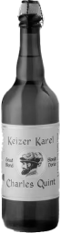
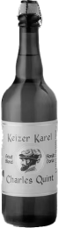

Laat je inspireren door
Christoffel
Plantijn
Een pionier die met passie de kracht van het gedrukte woord ontketende
Verken zijn verhaal
Plantijn
In mei 1520 werd Christoffel Plantijn geboren in het Franse Saint-Avertin. Zijn jeugd was zwaar: op 14-jarige leeftijd verloor hij beide ouders. Toch vond hij kracht in zijn passie voor boeken. Als boekbinder leerde hij precisie en perfectie, wat de basis vormde voor zijn toekomstige succes in de drukkunst.
Ondanks tegenslagen bleef Plantijn gedreven. Met passie en doorzettingsvermogen bouwde hij een nalatenschap op die de kracht van het geschreven woord voor altijd veranderde.

Uitgeverij
Johanna Riviere, de vrouw die zijn partner werd in liefde en ambitie, ontmoette Plantijn in Frankrijk. Op 30-jarige leeftijd verhuisde hij naar Antwerpen, waar hij in 1555 de Plantijnse Drukkerij oprichtte om verhalen en kennis te verspreiden. De drukkerij groeide uit tot een internationaal icoon en bleef drie eeuwen actief, een nalatenschap die generaties blijft inspireren.
Ga de challenge aan!
Zet de foto's in de juiste volgorde en krijg een uniek inkijkje in hoe drukwerk tot leven komt.
- tekst vast zetten
- letters kiezen
- persen met machine
- tekst vormen
- inkt op tekst
- tekst op machine plaatsen
Wil je meer te weten komen over drukpers? Ga naar de website van het museum Plantin - Moretus
Ga naar website van museumeducatie
Christoffel Plantin liep voorop in educatie en ondernemerschap. Hij leerde zijn dochters van jongs af aan om bij te dragen aan het familiebedrijf en betrok zijn schoonzonen, van wie één een filiaal in Parijs opende.
Met zijn visie legde hij de basis voor een erfenis die generaties en grenzen overstijgt.
religieuze onrust
protestanten
versus
Christoffel Plantin bouwde zijn succes in Antwerpen te midden van religieuze onrust tussen katholieken en protestanten.
Ondanks de risico’s bleef hij vastberaden en volhardend werken aan zijn droom. Zijn verhaal toont hoe veerkracht en toewijding zelfs in moeilijke tijden tot succes kunnen leiden.
katholieken
passer
 

Het portret van Christoffel Plantin toont een passer, symbool voor balans en vooruitgang. Eén poot staat voor zijn kernwaarden: geloof, vakmanschap en toewijding. De andere reikt naar groei en innovatie.
Dit evenwicht tussen traditie en vernieuwing vormde de basis voor zijn blijvende succes.
Christoffel Plantin’s grootste triomf was: de meertalige Biblia Regia
Een acht-delig meesterwerk in vijf talen, bedoeld om koning Filips II te imponeren. Met twaalf luxe exemplaren op perkament verwierf hij internationale faam.
Als beloning kreeg hij een lucratieve licentie voor religieuze boeken, waarmee hij zijn status als visionair uitgever bevestigde.
huis der liefde


Plantin zag sociale samenwerking als sleutel tot succes. Als lid van het genootschap Huis der Liefde kreeg hij morele en financiële steun voor zijn drukkerij.
Dankzij zijn talent voor strategische allianties groeide zijn uitgeverij uit tot een internationaal bedrijf. Plantin bewees dat visie en samenwerking onmisbaar zijn voor grote ambities.
nieuwe generatie

Zijn nalatenschap leeft voort in het Museum
Plantin-Moretus, waar zijn werk en erfgoed bewaard blijven. Jan
Moretus, zijn schoonzoon, zette de traditie voort.
ga naar website van museum
Ga terug naar de oude generatie door te swipen.